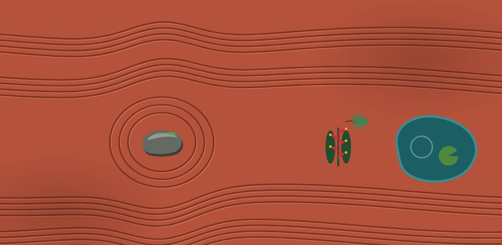
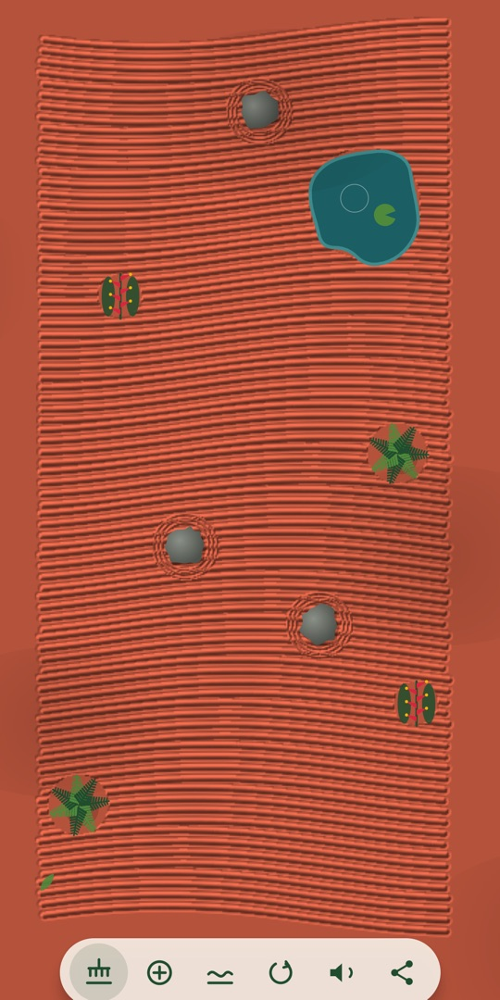
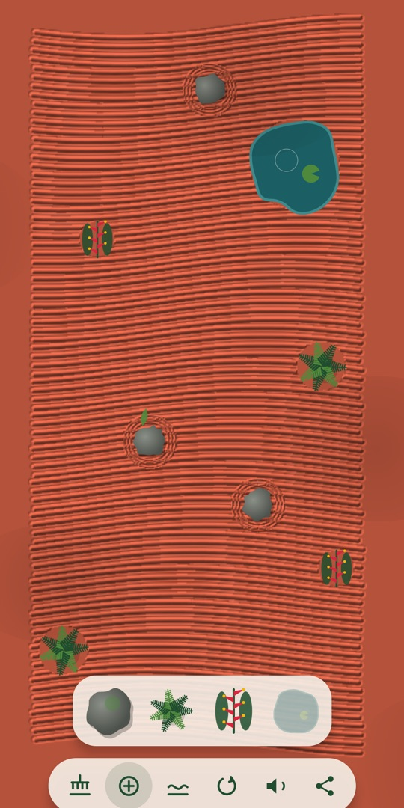
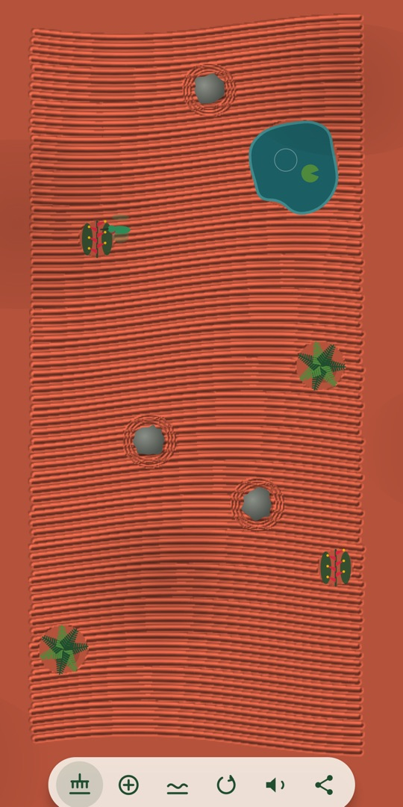

Tierra Colorada - Zen es un jardín para relajarte, inspirado en la tierra roja y la selva de América Latina. Dibuja con el dedo y el rastrillo deja surcos que siguen tu mano. Coloca piedras, helechos, heliconias y un estanque. Después, simplemente mira: la sombra de las hojas pasa despacio y, si plantaste una heliconia, un colibrí viene a visitarla.
Tierra Colorada - Zen is a garden to relax in, inspired by the red earth and rainforests of Latin America. Draw with your finger and the rake leaves grooves that follow your hand. Set stones, ferns, heliconias and a pond. Then just watch: leaf shadows drift slowly by, and if you planted a heliconia, a hummingbird comes to visit.
En el jardínIn the garden
- RastrillaUn rastrillo de cuatro dientes deja surcos en relieve.
- RakeA four-tine rake leaves sculpted grooves.
- DecoraPiedras, helechos, heliconias y un estanque que puedes mover, agrandar y girar.
- DecorateStones, ferns, heliconias and a pond you can move, resize and rotate.
- Mira cómo viveSombras del dosel, hojas que caen, ondas en el agua y colibríes.
- Watch it liveCanopy shadows, falling leaves, pond ripples and hummingbirds.
- Escucha la selvaLluvia suave y pájaros de fondo, con opción de silencio.
- Hear the rainforestSoft rain and birdsong, with a mute switch.
- Se guarda soloTu jardín te espera tal como lo dejaste. Comparte una foto cuando quieras.
- Saves itselfYour garden waits just as you left it. Share a picture whenever you like.
- En español e inglésY con soporte para lectores de pantalla.
- Spanish and EnglishWith screen-reader support.
CapturasScreenshots



Gratis, sin anuncios y sin compras. Funciona sin internet y no recopila ningún dato. Si en tu teléfono desactivaste las animaciones, el jardín se queda quieto.
Free, no ads, no purchases. Works offline and collects no data. If you've turned off animations on your phone, the garden stays still.